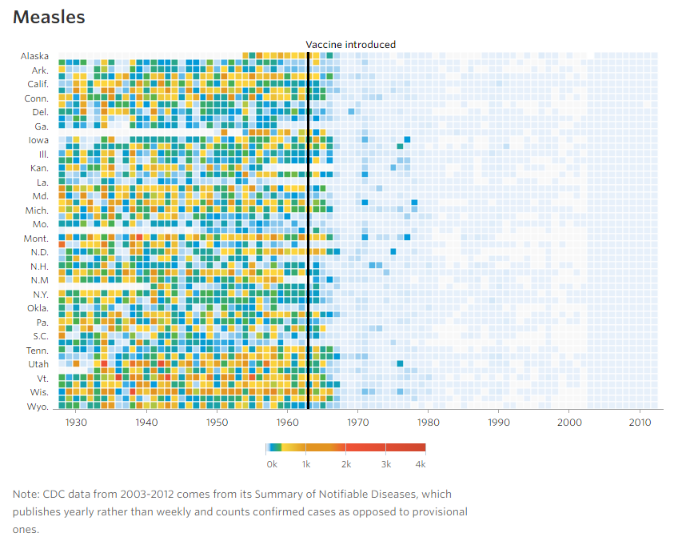

The conference
Three breakout sessions per day
18(!) parallel presentations per breakout session
Sessions Oren attended
March 23, 2017
Speakers
- Mike Liddell, NGP VAN, General Manager of Digital
- Matt Compton, Hillary for America, Deputy Digital Director
- Henri Makembe, Beekeeper Group, Partner
- Maura Walsh, Environmental Working Group, VP, Digital Strategies
Session notes
Summary
- For campaigns, SMS replaces some telephone outreach.
- Clinton offices had SMS banks instead of phone banks
- For fundraising, email is still king (over SMS) for getting people to do concrete things
- Investing in optimizing and integrating existing tools, rather than introducing new ones
- For example: integrating departments, building up knowledge management
- Q: How to expand your existing audience?
- Henri: do different things to reach out to new audiences, but that includes a risk that you will lose some of your existing audience in the process.
- Recommendations
- Personalized appeals: preselect donation amounts based on individual donor history
- Mailing list metrics: engagement is more important than size (Environmental Working Group "lives and dies" by that number)
- Take advantage of Facebook targeting: upload your mailing list to Facebook, use their tools to identify profiles for targeting
March 23, 2017
Speakers
- Wendy Harman, wendy.harman@gmail.com, @wharman
- Emily Ianacone, @myfriendemily
- Kate McCall-Kiley, @katemccallkiley
Summary
- Human centered/ user centered design: "Design with, not for"
- Start with a "journey map": sketch of experience from the user/customer/client perspective
- When brainstorming, respond to others' suggestions with "yes, and" - add to other ideas, don't contradict
- A problem statement starts by formulating a question "How might we...?"
March 23, 2017
Alberto Cairo
Alberto is an educator and consultant in the field of infographics and data visualization. As of June 2015, he is Knight Chair in Visual Journalism at the School of Communication of the University of Miami. He is also the director of the visualization program of the Center for Computational Science. In the past decade, he has helped companies and educational institutions in more than 20 countries produce better visualizations and infographics. Alberto is also the author of the book 'The Functional Art: An Introduction to Information Graphics and Visualization' (www.thefunctionalart.com).
Slides
Quick notes
- Visualization as an unqualified term: not just "data visualization"
- Visualization "expands your perception and cognition", gives you super powers
- visualization is going mainstream:
- It's persuasive
- Research shows that visualizations are more persuasive than text (even if they have nothing to do with the text)
- lots of free tools and open source: inzight, R, Microsoft power BI
- lots of free training (youtube)
- Lots of visualizations and info graphics in journalism
- Data viz forms: www.datavizcatalogue.com
- Ann Kemery essentials

March 24, 2017
Speakers
- Mac Prichard, Prichard, President: mac@prichardcommunications.com
- Jenna Cerruti, Prichard, Account Director: jenna@prichardcommunications.com
- Joe Costello, Robert Wood Johnson Foundation, Director, Digital Communications: jcostello@rwjf.org
Summary
- 7 deadly sins
- If you build it they will come (World Bank: 31% of posted PDFs are never downloaded)
- Civilians read academic journals
- Treat your story like a one day sale
- Think people have time to read your reports (like 25-page PDF)
- Professional jargon
- Think the data speak for themselves
- People only hear from you when you want something
- Solutions and strategies
- Develop a communications strategy! Goals, define audiences, key messages, calls to action
- See marketing template shared in notes
- Break up info in your report into chunks: one post for each chunk. Also a way to promote the same report many times
- Add visualizations to engage partners
- Social: activate audiences, release content on a regular basis to reach new audiences
- Social media tips
- Not one channel
- Promote your research again (and again), with visuals
- Excellent example of social media tiles illustrating research results from (farmtoschool.org)
- Targeted conversations (back to school for example, other relevant dates)
- It pays to advertise: organic reach is not enough
- AND, don't forget email newsletters
- Tool: Thunderclap: coordinate messages with partner organizations on Twitter
March 25, 2017
Speakers
- Orwin Evenson, Blue State Digital
- Vijita Kumar, US Fund for UNICEF, Assistant Director, Integrated Marketing
- Lisa Sock, Lisa Sock + Associates, Integrated Advocacy + Fundraising Strategist
Summary
- "Ladder of engagement" based on "romantic" idea of moving people to higher levels of engagement
- Put into practice by creating user journeys, ideally personalized to different audiences
- Personalization
- First name: bare minimum in email
- Geographic
- Dynamic ask strings based on donation history
- Dynamic: personalized graphics (Moveable Ink)
- Use cookies to tailor experience based on previous behavior or interests
- Custom hotlists and welcome series: thanks for (your previous action), move on to next rung of ladder
- Hyper targeting (esp Facebook): Includes engaging inactive parts of email list with Facebook ads
- Time to dismantle the linear ladder?
- Ladder good for internal goal setting, defining hierarchies (for internal purposes)
- Doesn't really match how people are interacting with organizations: it's not linear (esp for advocacy organizations post-election)
- Vijita: People aren't waiting for organization to tell them what to do, so orgs shouldn't act that way. It's not a funnel.
- Org needs to "find the hand raisers" and help them do what they already want to do
- Need to be able to act quickly at every rung of the ladder at any time
- When people encounter your organization, they're not interacting with a department, they're interacting with the organization. So your offering must represent the organization needs, not the desires of specific departments
- Lisa: maintain 4 or 5 personas, update and revisit continually. Keep them in mind all the time
March 24, 2017
Speakers
- Jason Shim, Pathways to Education Canada, Associate Director, Digital Strategy and Alumni Relations
- Mark Hallman, Evergreen Digital Marketing, President
- Shubhagata Sengupta, Capacity Canada, Digital Media Coordinator
Tools particularly relevant for ICFJ
See the notes for the complete list
- EmailHippo: Email address verification and sanitization. Also useful for ‘guessing’ emails (you can verify whether an email address is active). Most orgs wait for bounce-backs. This allows you to verify how many valid addresses you have. You can upload an entire list to scrub it (very cheap)
- Wistia, video hosting and analytics, includes responsive player, transcoding, ad placement, analytics. "Turnstile" to collect emails
- Google AdWords Keyword Planner, includes traffic estimates
- Unsplash: Free (for now) high def photos; mostly landscapes. Good use for hero image, or poster bg.
- Palettable: Build out color palettes quickly. Good for demoing to leadership/approval.
- The Noun Project: Free (w/attribution) and low cost icon library
- Litmus.com: Free email responsive templates
- Let's Encrypt: Free/open SSL certifications - must haves for shops/donations. Increasingly standard for all the web. Google ranks ssl pages higher.
- ResourceSpace: Open source / freemium digital asset management
- Mightytext.net: Like iMessage for Android. Get Android texts to your desktop.
- Launchaco, see available domains and social accounts for a name
- builtwith.com: See what tech other sites are using for their pages
- Dashboard Junkie: One click install dashboards. Easy to plug into GA. Great for sharing insights.
WHERE TO FIND MORE: TechSoup, ProductHunt, HackerNews
March 24, 2017
Camille Eddy
Camille Eddy is currently in her senior year studying Mechanical Engineering at Boise State University leading an active lifestyle of student leadership. After taking an interest in space science she led several programs involved in research in space, including the NASA Microgravity Undergraduate Research program during her second year, where she worked closely with former astronaut Barbara Morgan. Other programs included a research grant from the Miles Undergraduate Research Initiative where she studied Augmented Reality. At the end of her second year at Boise State she accepted an internship at HP and began developing robotics in the Robot Development Lab. She then advanced to an internship at HP Inc’s headquarters in Palo Alto, California as a Machine Learning Intern building a new generation of smart robotics.